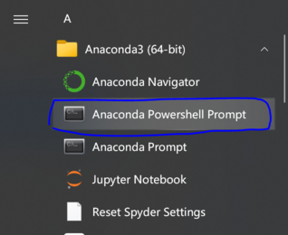
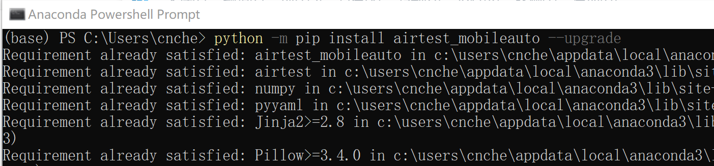

安装指南
安装模拟器和登陆游戏¶
- 推荐将游戏安装到BlueStack/LDPlayer/MuMu模拟器/docker中.
- 模拟器的分辨率设置为
960x540,dpi为160. - 开启模拟器的ADB调试
- 安装王者、扫码登录账号, 下载所有游戏资源, 并手动进入游戏大厅.
本助手是通过adb协议连接的模拟器, 不是针对电脑屏幕的识别, 模拟器不用放在前台, 可以最小化到任务栏, 可以使用老板键隐藏模拟器, 可以远程登录windows执行脚本后退出, 电脑可以锁屏, 可以断开显示器电源，只要模拟器和脚本在后台运行,电脑没有自动休眠就行.
其他建议
- 不要在模拟器上安装登录微信, 详情搜索模拟器封微信, 扫码登录游戏没有任何风险.
- 在新设备/模拟器上登录游戏账号, 首次进入人机房间、战令、战队、KPL赛事、领取各种礼包等界面时,
王者总会有各种弹窗、强制观看视频等. - 本脚本虽然能够处理这些弹窗, 但是极其的浪费时间.
- 更新完游戏资源,并手动进入过上述界面关闭弹窗后, 可以大大加速脚本的执行速度.
- 本脚本通过模拟人手点击进行,至今未受到任何警告处罚。但请你为自己的账户负责。
- 请关闭模拟器的root, 本脚本不需要root权限, root会封禁体验服的账户.
- 请遵守游戏协议、不要安装违反游戏平衡的软件、不要修改王者APP以及游戏数据。
- 请使用官方允许的方式在安卓设备上登录ios区的账户, 不要使用第三方修改之后的模拟器、版本过低的模拟器以及小众模拟器。
- 🔥ios区的账户请使用腾讯官方的手游助手刷ios区的账户
- 不建议控制苹果手机, 非常复杂, 头铁用户见苹果手机怎么使用
- 如果不想使用模拟器, 请阅读控制安卓手机或任意模拟器.
- 如果不想使用电脑并且你是一个非常有耐心和技术的人, 请阅读只用一部手机、不依赖电脑运行自动化脚本
配置环境¶
安装 Python¶
- Python新手, 推荐安装Anaconda(可以到TUNA下载最新的安装包)
- Python老手, 用你喜欢的Python就行.
安装依赖¶
- 打开终端(若安装了Anaconda, 打开
Anaconda Powershell Prompt), 执行:
python -m pip install airtest_mobileauto --upgrade
- 如果无法更新
airtest_mobileauto(或者下载网速过慢), 请查看Q&A:没法安装airtest_mobileauto


下载代码¶
- 打开https://github.com/cndaqiang/WZRY, 点击右上角的star👻.
- 点击右下角的release, 即https://github.com/cndaqiang/WZRY/releases页面, 下载最新的Source code (zip).
- 如果无法访问https://github.com/cndaqiang/WZRY, 请查看Q&A:没办法下载WZRY代码
- 下载后解压得到
WZRY-x.x.x或autowzry-x.x.x(x.x.x为版本号). - 请务必从releases下载最新版本的代码
- 请务必从releases下载最新版本的代码
- 虽然本教程在撰写的时候是用的旧版本, 但是你在照着教程做时, 请务必从releases下载最新版本的代码, 每个赛季的对战、结算、战令界面都有更新, 老版本代码无法适配.
更新资源¶
- 通常是不需要更新的. 王者重大活动期间, 例如周年庆、冰雪奇缘联动等,才需要临时更新.
- 更新判据: 如果大厅的对战图标不是
 ,就需要更新
,就需要更新 - 在更新资源页面可以获得更新资源以及更新方法, 视频教程见农活自动化助手: 适配王者荣耀冰雪奇缘联动界面更新.
运行方式¶
方式1. 直接运行¶
- 当模拟器的ADB地址是
127.0.0.1:5555时(比如雷电模拟器), 可以直接运行脚本python -u wzry.py - 若运行脚本后无法连接模拟器，或有组队需求，请使用配置文件运行
- 打开支持python的终端(安装Anaconda后,打开
Anaconda Powershell Prompt), 执行:
# 进入wzry.py所在的目录
cd D:\Download\WZRY-2.3.2.2
# 执行脚本
python -u wzry.py
方式2. 使用配置文件运行¶
配置文件中包含模拟器的adb地址信息、组队信息等诸多信息.
若adb地址是emulator-5554不是端口为5554的含义, 更详见配置文件的写法.
MuMu模拟器使用配置文件示例
- 在模拟器的设置里查看ADB的地址为
127.0.0.1:16384 - 在代码目录创建
config.win.yaml,填入下面内容 - 如果你不会创建
.yaml文件,可以下载我的config.win.yaml放到运行代码的目录,并适当修改 - 脚本总是提示找不到
config.win.yaml,见常见问题
mynode: 0
LINK_dict:
0: Android:///127.0.0.1:16384
- 打开支持python的终端(安装Anaconda后,打开
Anaconda Powershell Prompt), 执行:
# 进入wzry.py代码目录
cd D:\Download\WZRY-2.3.2.2
# 执行脚本
python -u wzry.py config.win.yaml
方式3. 在vscode等软件中¶
- 创建配置文件
config.win.yaml,同上 - 修改
wzry.py/wzyd.py/tiyanfu.py中的config_file = ""为config_file = "config.win.yaml"
def main():
# 如果使用vscode等IDE运行此脚本
# 在此处指定config_file=config文件
config_file = ""
- 运行
方式4. 使用autoWZRY¶
- 更多见进阶教程
python -m pip install autowzry --upgrade
autowzry config.win.yaml
更多功能¶
先阅读功能说明
自动选择英雄¶
切换对战模式¶
开启礼包功能¶
见礼包功能
多开刷多账户¶
多开不组队¶
如果需要刷很多个账户, 为每个账户单独打开一个Anaconda Powershell Prompt,均执行cd 代码目录的命令, 然后使用各自账户的配置文件启动
python -u wzry.py config.0.yaml
python -u wzry.py config.1.yaml
python -u wzry.py config.2.yaml
python -u wzry.py config.3.yaml
#....
注意,每个账户的配置文件config.i.yaml中的mynode必须不同, 更多见配置文件,比如第二个账户的配置config.1.yaml为
mynode: 1
LINK_dict:
1: Android:///127.0.0.1:16416
多开并组队¶
见组队教程